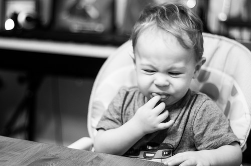

The clearest reason for banning french fries can be found in their ingredients. Many fries have a long list of chemicals and preservatives in them, but even the cleanest sounding ingredients are secretly filthy.
Below are the three most basic ingredients of a french fry, with explanations of why they are bad...
Another substantial problem with french fries is the wide range of detrimental effects they can have on their consumers. According to the New York Times, eating french fries has been linked to obesity, diabetes, and even death!
To save the lives of untold numbers of people, french fries must be banned!
French Fries are gross! Why would anyone want to eat them?
